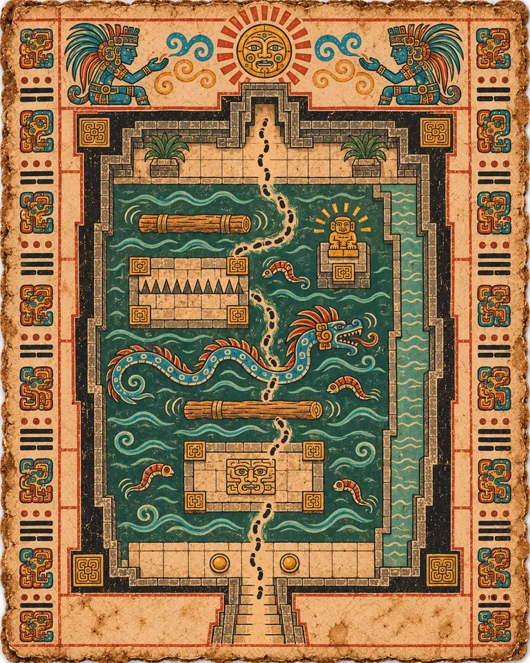
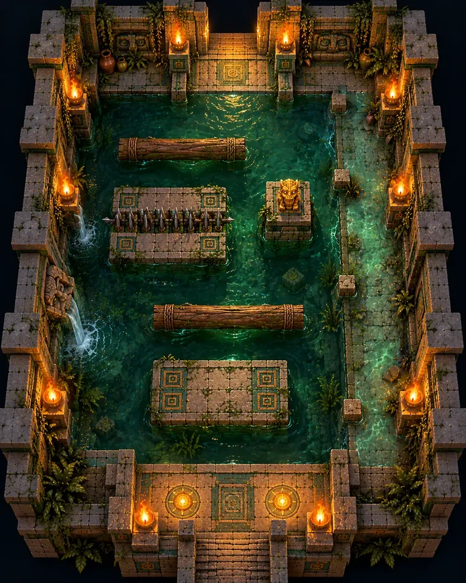

T1A
Die ertrunkene Galerie
Eine hohe, geflutete Halle voller dunkelgrünem Wasser. Du überquerst Steininseln und treibende Baumstämme dazwischen, und auf einer Insel fährt in festem Takt ein Streifen Stacheln aus.
Im tiefen Wasser lauern Tempelegel. Die flache Watspur an der Ostwand ist sicher vor ihnen, aber langsam, und Ertrunkene Erweckte steigen daraus empor, wenn du vorbeikommst, also kostet der Weg des Feiglings Zeit und einen Kampf. Das goldene Idol steht auf einer Säule im Wasser.



